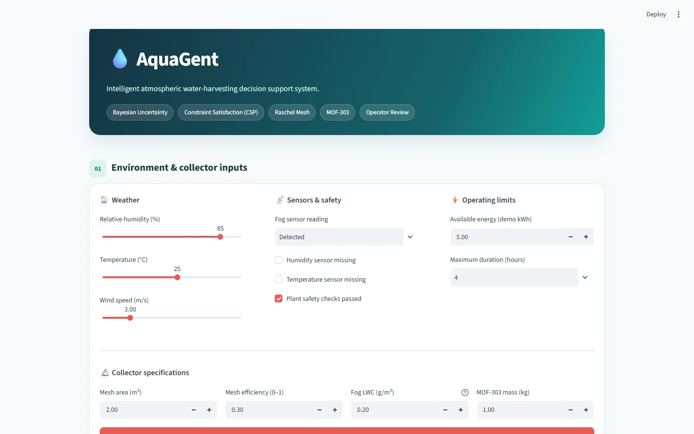
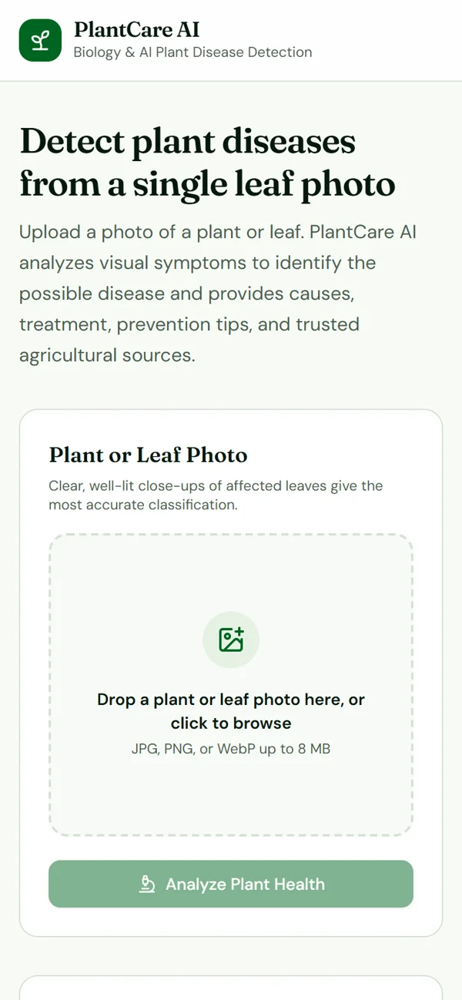

Education ·
Computer Science · Artificial Intelligence · Effat University
Zainab Alameri
Computer Science student specialising in Artificial Intelligence
I design and develop intelligent software, from AI decision-support systems and computer vision to full-stack web applications, with a focus on reliability, rigorous testing and clear documentation.
- Dean's ListEffat College of Engineering
- IEEE MemberIEEEXtreme 20.0 competitor
- Active on GitHubShipping code every week
— What I do
I build systems that turn real-world data into explainable decisions.
My work spans probabilistic reasoning, constraint satisfaction, computer vision and full-stack development. Every project is tested, documented and designed with the end user in mind.
Explore the case studies

Live applications
AquaGent & PlantCare AIMy AI decision-support system and plant-disease detection platform in action.
01 Applications
Web applications.
Working web applications with real interfaces, each with a detailed case study of the problem, solution and outcomes.
02 Honours & awards
Honours & achievements.
Academic distinction and competitive programming on behalf of Effat University.
03 Projects
Technical & academic projects.
Command-line software, database design, object-oriented programming and research, synchronised automatically with my GitHub profile.
Connecting to GitHub…
04 About me
Background & approach.
I am drawn to problems where uncertain, real-world data must be translated into sound decisions, and I take ownership of projects from requirements to a tested, documented release.
Recent work includes an AI system that optimises atmospheric water harvesting, a computer-vision platform that diagnoses plant diseases from a single image, and a learning platform that generates bilingual assessments from students' notes.
Beyond technical work, I have led five team projects, served as a peer tutor, and currently work as a peer academic advisor supporting students with course planning and registration.
I apply rigorous engineering standards: well-defined requirements, explainable outputs and automated testing to validate every system.
- 01Define the problemAnalyse the data, users and constraints before selecting a design.
- 02Ensure explainabilityExpose the probabilities, constraints and sources behind every output.
- 03Validate and documentAutomated testing, continuous integration and comprehensive documentation.
Recent GitHub activity
- Loading…
Languages across my repositories
Terminal output · Student Grade Tracker
05 Timeline
Academic journey.
Key milestones across my studies, projects and service.
Experience, leadership & service
06 Skills
Technical skills.
Each skill is mapped to the projects where it was applied. Select a skill to view them.
07 Certifications
Licences & certifications.
Each credential links to the issuer's official verification page.